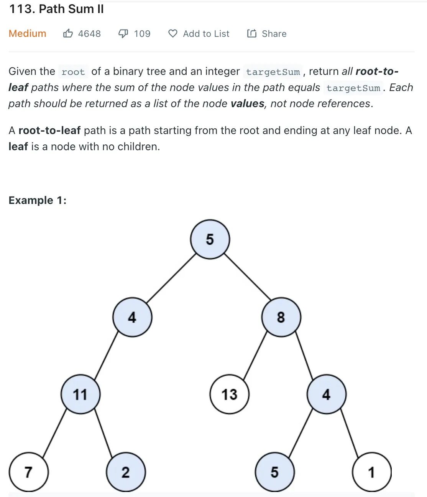
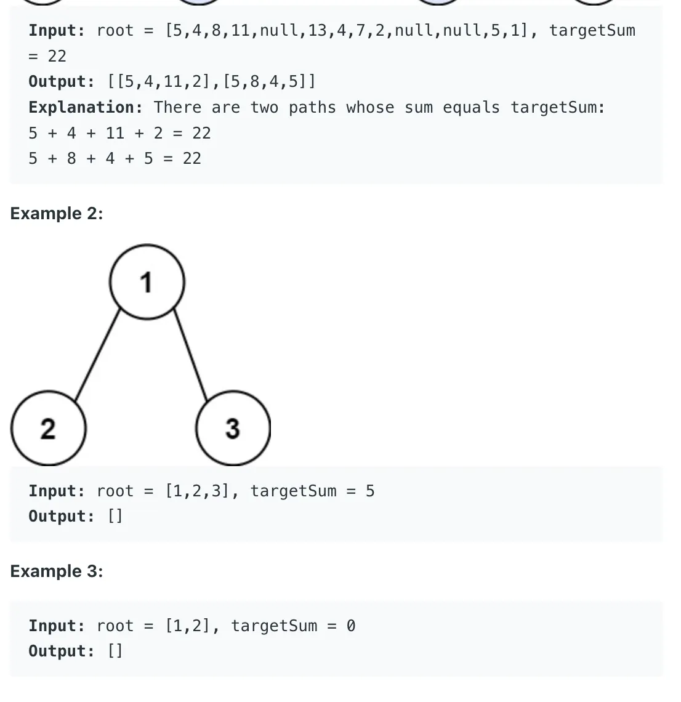
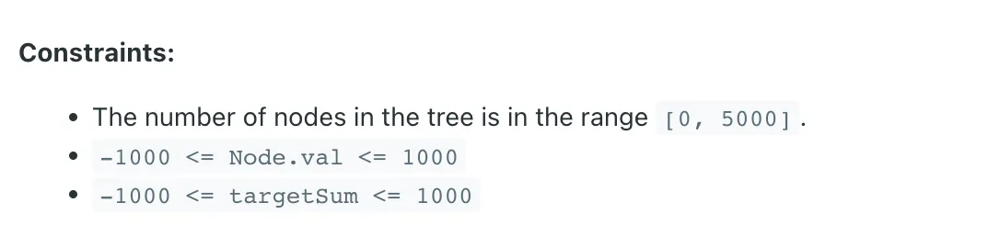

113. Path Sum II
考過的公司：Asked by: Amazon
Question



先自己想想看 🤔Try it yourself first 🤔
✍🏽 My Solution
Solution #1 [王爭]
class Solution {
private List<List<Integer>> result = new ArrayList<>();
public List<List<Integer>> pathSum(TreeNode root, int targetSum) {
if (root == null) return result;
dfs(root, targetSum, new ArrayList<>(), 0);
return result;
}
private void dfs(TreeNode root, int target, List<Integer> path, int pathSum) {
path.add(root.val);
pathSum += root.val;
// 抵達葉子節點
if (root.left == null && root.right == null) {
if (pathSum == target) {
List<Integer> pathSnapshot = new ArrayList<>(); // 不能直接拿path, 因為path會變
pathSnapshot.addAll(path);
result.add(pathSnapshot);
}
path.remove(path.size()-1);
return;
}
if (root.left != null) {
dfs(root.left, target, path, pathSum);
}
if (root.right != null) {
dfs(root.right, target, path, pathSum);
}
path.remove(path.size()-1);
}
}